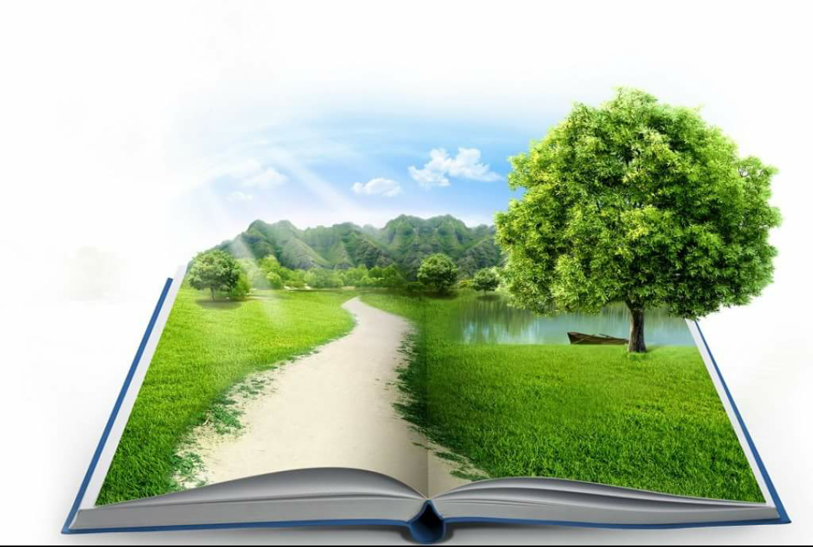
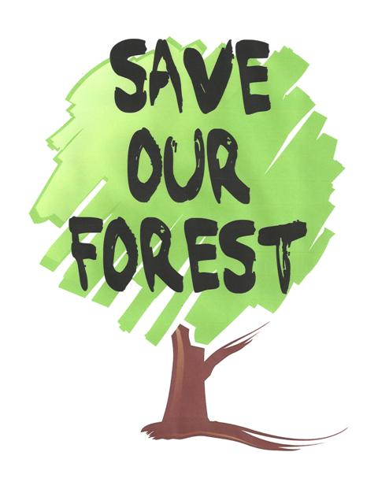

|  |  |
We should save forests as a protection against floods and famines. Forests prevent floods and reduce soil erosion by regulating the flow of water. Adequate forest cover also ensures a sustainable and safe environment. Forest helps in increasing the humidity of the air and cause greater rainfall. They also help in increasing the soil fertility. They protect the adjoining crops by reducing the velociy of the storms.
There are millions of people who are learning about the issues and taking little steps to help. But, it is that saving forests is not going to be easy. It will take the efforts of many people working together. Additionally, many governments, organizations, and societies are making great strides in helping reducing deforestation and encouraging forest plantations. But there is still a lot to do.
Due to the extent and nature of forest destruction, efforts to stop deforestation and preserve them are best achieved at government and organization levels. This means that laws, rules, and regulations from countries can help to enforce the preservation of forests. Laws on farming, timber, and wood, as well as land use must be encouraged and enforced. We can save forests stopping the cutting of trees (stop deforestation), establishing new forests (afforestation) and restablishing old forests (reforestation). Planting new trees can help to reduce the amount of CO2 in the air. Reforestation can help to restore what the erosion has damaged. It can also help to supply jobs for those who lack skills to be employed in other industries.
Protecting the world's forests is a key priority in the fight against climate change. Maintaining the forest ecosystems for the benifit of futute generations. Therefore, we should protect our forests as much as we can.